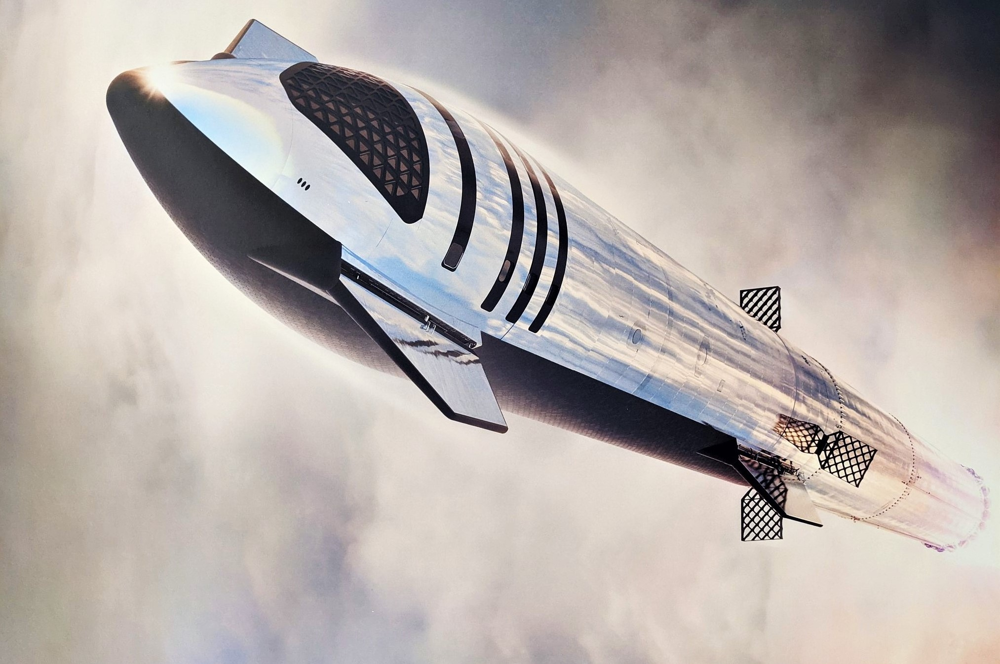

SpaceX successfully launched another crew of four on their way to the International Space Station, marking the fifth time the company has sent people to space. Riding inside SpaceX’s Crew Dragon capsule, the spacefarers will now spend roughly the next day in orbit lapping the Earth, before docking with the ISS. The mission, called Crew-3, is carrying three NASA astronauts — Raja Chari, Tom Marshburn, and Kayla Barron — and one German astronaut, Matthias Maurer of the European Space Agency. After a number of launch delays, the foursome finally took off from NASA’s Kennedy Space Center in Cape Canaveral, Florida at 9:03PM ET, launching on top of one of SpaceX’s Falcon 9 rockets. After successfully boosting the Crew Dragon carrying the passengers into low Earth orbit, the Falcon 9 then turned back toward Earth and performed one of SpaceX’s signature rocket landings on the company’s drone ship in the Atlantic.
